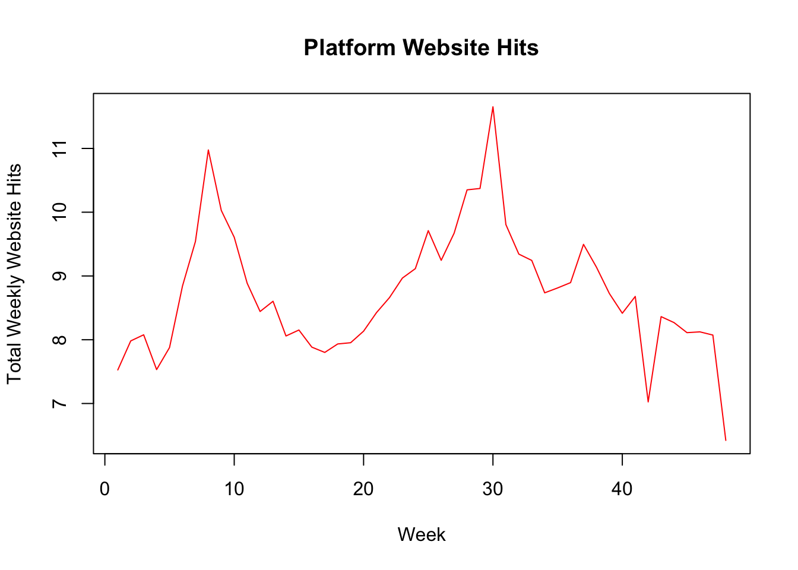
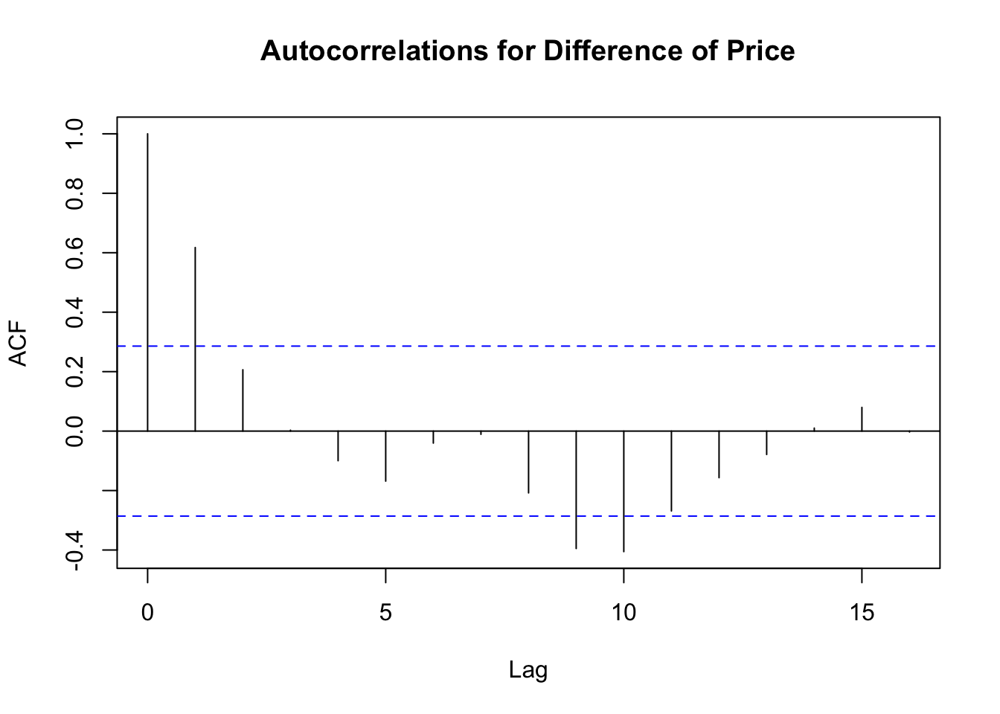
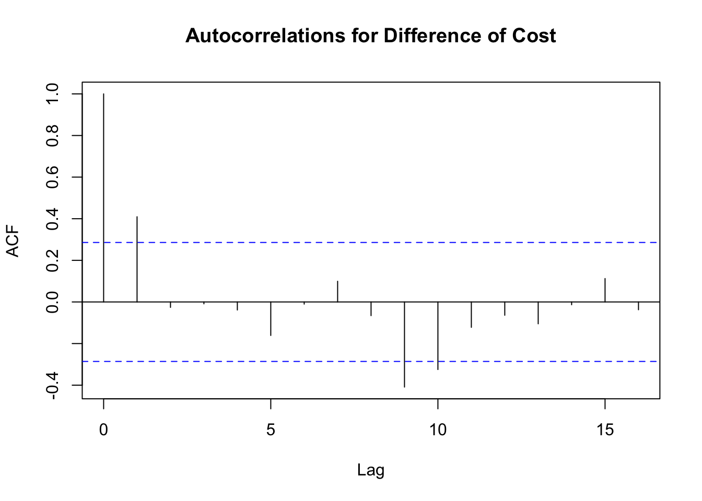
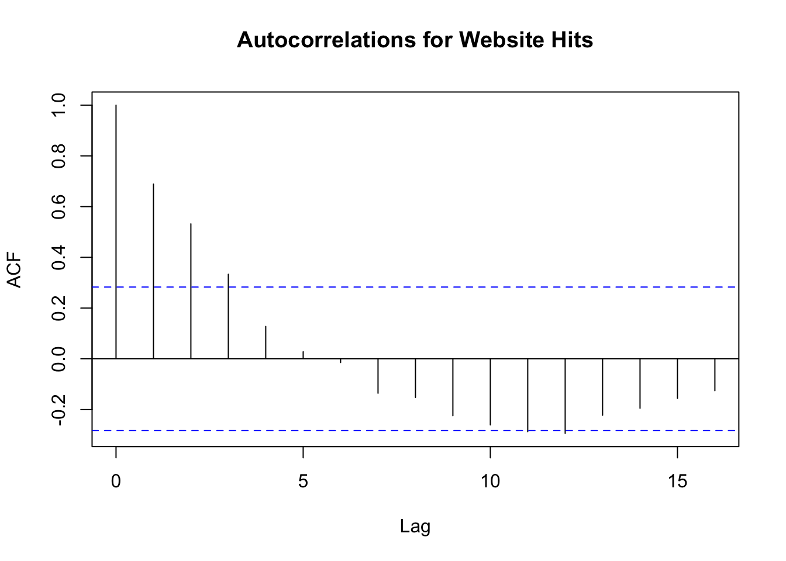
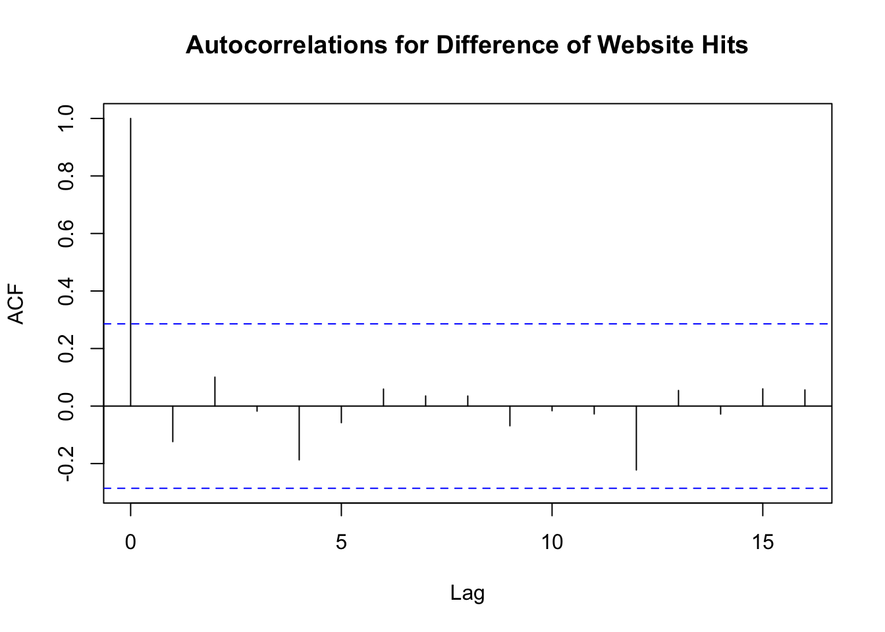
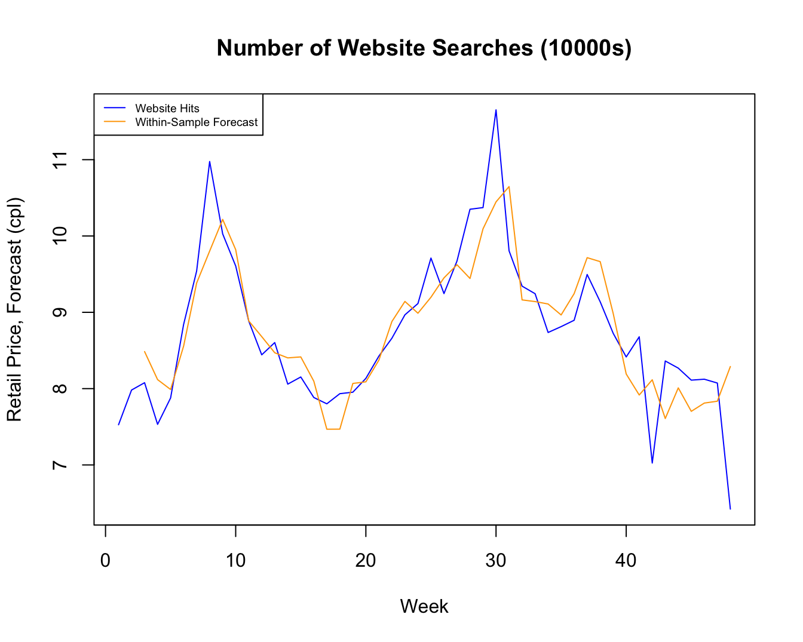

## Load Applied Econometrics Package for testing and heteroskedasticity robust standard errors
library(AER)
# load stargazer()
library(stargazer)
## Load dataset on consumer search and petrol prices
mydata=read.csv(file="tute12_petrol.csv")
# Re-scale search variable in terms of 10000's searches per-week
# Important for making AR(p) and ADL(p,q) models more interpretable
mydata$search=mydata$search/10000
# First and second lag of price
# Use View(mydata) to check that these are indeed lagged prices
# Shifts the price variable forward 1 places, fills in first data point with NA
mydata$price_lag1=c(NA,head(mydata$price, -1))
# Shifts the price variable forward 2 places, fills in first data point with NA
mydata$price_lag2=c(NA,NA,head(mydata$price, -2))
# First and second lag of cost
mydata$cost_lag1=c(NA,head(mydata$cost, -1))
mydata$cost_lag2=c(NA,NA,head(mydata$cost, -2))
# First and second lag of search
mydata$search_lag1=c(NA,head(mydata$search, -1))
mydata$search_lag2=c(NA,NA,head(mydata$search, -2))
# Compute first difference of price variable and its two lags
# Note that the "NA" part fills in "NA" for the first observation for the differenced
# variable, which we cannot compute because no value comes before the first observation
mydata$d_price=c(NA,diff(mydata$price))
mydata$d_price_lag1=c(NA,diff(mydata$price_lag1))
mydata$d_price_lag2=c(NA,diff(mydata$price_lag2))
# First difference of the cost variable
mydata$d_cost=c(NA,diff(mydata$cost))
mydata$d_cost_lag1=c(NA,diff(mydata$cost_lag1))
mydata$d_cost_lag2=c(NA,diff(mydata$cost_lag2))
# First difference of the search variable
mydata$d_search=c(NA,diff(mydata$search))
mydata$d_search_lag1=c(NA,diff(mydata$search_lag1))
mydata$d_search_lag2=c(NA,diff(mydata$search_lag2))
# C. SEASONAL DUMMIES
# Run preliminary seasonality regressions with search, prices, costs
# Create quarterly dummy variables, week 1 is the first week of January 2018
mydata$sum=as.numeric(mydata$week>=1 & mydata$week<=13) # Summer dummy (Quarter 3)
mydata$aut=as.numeric(mydata$week>=14 & mydata$week<=26) # Autumn dummy (Quarter 4)
mydata$win=as.numeric(mydata$week>=27 & mydata$week<=39) # Winter dummy (Quarter 1)
mydata$spr=as.numeric(mydata$week>=40 & mydata$week<=52) # Spring dummy (Quarter 2)Overview
This tutorial uses the following files available on Canvas:
- tute12.R
- tute12_petrol.csv
The first file is the \(\texttt{R}\) code for tutorial 12, the second file is the .csv file that contains the dataset for the tutorial.
The dataset has the following 3 variables:
| week | week of the year in 2013, from week 1 (start of January) to week 48 |
| search | number of website hits on the online petrol price reporting platform [Fuelwatch: https://www.fuelwatch.wa.gov.au/] |
| price | average retail petrol price in a week in Perth, WA |
| cost | equals one if an individual is female, 0 otherwise |
| age | average wholesale petrol cost in a week in Perth, WA |
In total, the dataset contains this information for 48 weeks in 2013 in Perth.
Having worked through the tute12.R code and graphs, please answer the following:
Q1
Construct the following variables:
- First and second lags of search, price, and cost
- First difference of search, price, and cost
- First and second lags of the first difference of search, price, and cost
- Dummy variables for the four quarters (or seasons) of the year
Explain why any lags, differences, or seasonal dummies that you constructed do not have observations.
Solution
See the R code provided e.g.
Check to see if the variables have been created correctly:
head(mydata,6) week search price cost price_lag1 price_lag2 cost_lag1 cost_lag2
1 1 7.5265 140.48 131.64 NA NA NA NA
2 2 7.9815 141.41 131.03 140.48 NA 131.64 NA
3 3 8.0774 140.14 129.70 141.41 140.48 131.03 131.64
4 4 7.5318 139.48 129.86 140.14 141.41 129.70 131.03
5 5 7.8780 141.20 132.46 139.48 140.14 129.86 129.70
6 6 8.8418 144.90 136.16 141.20 139.48 132.46 129.86
search_lag1 search_lag2 d_price d_price_lag1 d_price_lag2 d_cost d_cost_lag1
1 NA NA NA NA NA NA NA
2 7.5265 NA 0.93 NA NA -0.61 NA
3 7.9815 7.5265 -1.27 0.93 NA -1.33 -0.61
4 8.0774 7.9815 -0.66 -1.27 0.93 0.16 -1.33
5 7.5318 8.0774 1.72 -0.66 -1.27 2.60 0.16
6 7.8780 7.5318 3.70 1.72 -0.66 3.70 2.60
d_cost_lag2 d_search d_search_lag1 d_search_lag2 sum aut win spr
1 NA NA NA NA 1 0 0 0
2 NA 0.4550 NA NA 1 0 0 0
3 NA 0.0959 0.4550 NA 1 0 0 0
4 -0.61 -0.5456 0.0959 0.4550 1 0 0 0
5 -1.33 0.3462 -0.5456 0.0959 1 0 0 0
6 0.16 0.9638 0.3462 -0.5456 1 0 0 0Looking at the dataframe:
- The first lags and differences are NA for the first observation because the first observation does not have any observations before it.
- Similar for the second lags: the second lag is NA for the second observation because there are no observations that exist two observations before it (e.g. before the dataset starts).
- The third observation for the difference in the second lag does not exist because the first observation has NA for its first difference, meaning the lagged value of the first difference two periods after the first observation (e.g., the third observation) is also NA.
Q2
Construct the following two time series plots and provide a brief interpretation of your findings:
- Plot 1: price and cost on the vertical axis, week on the horizontal axis
- Plot 2: search on the vertical axis, week on the horizontal axis
Solution
# Plotting retail prices and costs (note you could also do this in ggplot2() if you like)
plot(mydata$week,mydata$price, type="l",col="blue", ylim=c(120,160),
xlab="Week",ylab="Retail Price, Wholesale Cost (cpl)",
main="Retail Petrol Prices")
lines(mydata$cost, col = "forestgreen",type="l",lty=2)
legend("topleft", legend=c("Retail Price", "Wholesale Cost"),
col=c("blue","forestgreen"), lty=c(1,2),cex = 0.7) 
# Plotting web search activity
plot(mydata$week,mydata$search,
type="l",col="red",xlab="Week",ylab="Total Weekly Website Hits",main="Platform Website Hits")
The petrol price and cost graph shows retail prices track with costs closely week-to-week, with approximately a 10 cpl difference between the two. We also see two large spikes early in the year (Australian summer) and around week 30 of the year (North American summer), suggesting some seasonality in prices and costs.
The search figure highlights similar seasonal fluctuation in search activity around the times when retail price levels spike throughout the year, suggesting a link between the time series for search intensity and prices.
Q3
Compute autocorrelation functions for price, cost, and search and the first differences of price, cost, and search.
- Briefly comment on the persistence of these variables both in levels (the first 3 autocorrelations plots) and in first differences (the second 3 autocorrelations plots).
- What does first differencing do to the autocorrelations?
Solution
Note
ignore the first spike at lag 0


Looking at the correlograms (plots of the autocorrelation functions) for price,cost, and search and their first differences, we see that:
- Both price and cost have very persistent time series with up to the fourth lag (one month of lags) having a statistically significant autocorrelation.
- Search is also persistent, although less so with up to the third lag being statistically significant.
- The ACFs for the first differences show that differencing removes the persistence in each respective time series, however we still find statistically significant autocorrelations for prices and costs with a one-week lag.




Q4
Run three separate regressions where in each respective regression the dependent variable is price, cost, and search, and where the regressors in each regression are the quarter dummy variables you constructed in question 1.
- Interpret the regression coefficients, and explain how you have avoided the dummy variable trap in the regressions.
- Do your results suggest seasonal differences in the levels of any of the dependent variables?
Solution
First run the regressions and then output the results using stargazer
# Number of observations in the time series (used below)
T=48
# B. PRELIMINARY SEASONALITY REGRESSIONS
# Search seasonality regression check
seas1=lm(search~sum+aut+win,data=mydata)
cov1=vcovHC(seas1, type = "HC1")
se1=sqrt(diag(cov1))
# Prices seasonality regression check
seas2=lm(price~sum+aut+win,data=mydata)
cov2=vcovHC(seas2, type = "HC1")
se2=sqrt(diag(cov2))
# Cost seasonality regression check
seas3=lm(cost~sum+aut+win,data=mydata)
cov3=vcovHC(seas3, type = "HC1")
se3=sqrt(diag(cov3))Note that search has been rescaled in terms of 10000 website hits to ensure well-scaled regression results.
- The dummy variable trap is avoided in these regressions by omitting the dummy variable for spring. So all of the coefficient estimates correspond to changes in search/price/cost in a given quarter relative to the baseline/ omitted category of spring.
| Dependent variable: | |||
| search | price | cost | |
| (1) | (2) | (3) | |
| Summer | 0.82** | -0.64 | 0.37 |
| (0.38) | (1.31) | (1.24) | |
| Autumn | 0.52* | -4.75*** | -3.58** |
| (0.30) | (1.47) | (1.44) | |
| Winter | 1.61*** | 5.56*** | 5.95*** |
| (0.33) | (0.81) | (0.98) | |
| Constant | 7.94*** | 145.61*** | 134.26*** |
| (0.24) | (0.52) | (0.55) | |
| Observations | 48 | 48 | 48 |
| R2 | 0.34 | 0.54 | 0.51 |
| Adjusted R2 | 0.29 | 0.51 | 0.47 |
| Residual Std. Error (df = 44) | 0.83 | 3.67 | 3.66 |
| F Statistic (df = 3; 44) | 7.49*** | 17.31*** | 14.97*** |
| Note: | p<0.1; p<0.05; p<0.01 | ||
Interpreting the statistically significant results (at the 5% level) in the table, we find that:
For search, which recall is in terms of 10,000 website visits on the Fuelwatch platform, there are 0.82 \(\times\) 10000 = 8200 and 1.61 \(\times\) 10,000= 16,100 more searchers on average in a given week in summer and winter relative to average weekly search levels in spring.
For petrol prices (in cpl) we find that relative to spring, petrol prices are on average 4.76 cpl lower and 5.56 cpl higher in autumn and winter, respectively.
Similarly, for petrol costs (in cpl), we find that relative to spring, petrol costs are on average 3.58 cpl lower and 5.92 cpl higher in autumn and winter, respectively.
The results suggest seasonal increases in search in the (Australian) summer and winter, and respective seasonal decreases and increases in petrol prices and costs in the (Australian) autumn and winter.
The winter-related seasonality in petrol prices is, in part, likely due to higher seasonal demand for petroleum during the Northern Hemisphere summer months due to higher rates of travel, and hence petrol demand. This ultimately pushes up global crude oil prices, and hence petrol retailers’ costs and prices.
Q5
Estimate the following set of 6 time series regressions below, where search is the dependent variable in each.
Briefly interpret your results in each in terms of their economic and statistical significance.
Also compute the BIC and AIC for each model, and conclude which model would be chosen based on these two information criteria.
- AR(1) with search
- AR(1) + seasonal dummies with search
- AR(2) + seasonal dummies with search
- ADL(0,2) + seasonal dummies with search and price
- ADL(1,1) + seasonal dummies with search and price
- ADL(1,2,2) + seasonal dummies with search, price, and cost
Solution
Estimate the models (using the R code provided)
# AR(1) model with search
reg1=lm(search~search_lag1,data=mydata)
cov1=vcovHC(reg1, type = "HC1")
se1=sqrt(diag(cov1))
K1=2 # Number of parameters in regression reg1
ssr1=sum(residuals(reg1)^2) # SSR from the regression reg1
BIC1=log(ssr1/T)+K1*(log(T)/T) # BIC from the regression reg1
AIC1=log(ssr1/T)+K1*(log(2)/T) # BIC from the regression reg1
# AR(1) model with search with seasonal dummies
reg2=lm(search~search_lag1+sum+aut+win,data=mydata)
cov2=vcovHC(reg1, type = "HC1")
se2=sqrt(diag(cov2))
coeftest(reg2, vcov = vcovHC(reg2, "HC1"))
t test of coefficients:
Estimate Std. Error t value Pr(>|t|)
(Intercept) 2.64855 1.20860 2.1914 0.03402 *
search_lag1 0.64571 0.13922 4.6380 3.417e-05 ***
sum 0.55057 0.32839 1.6766 0.10106
aut 0.38227 0.28985 1.3188 0.19437
win 0.71155 0.31684 2.2458 0.03004 *
---
Signif. codes: 0 '***' 0.001 '**' 0.01 '*' 0.05 '.' 0.1 ' ' 1K2=5
ssr2=sum(residuals(reg2)^2)
BIC2=log(ssr2/T)+K2*(log(T)/T)
AIC2=log(ssr2/T)+K2*(log(2)/T)
# AR(2) model with search with seasonal dummies
reg3=lm(search~search_lag1+search_lag2+sum+aut+win,data=mydata)
cov3=vcovHC(reg3, type = "HC1")
se3=sqrt(diag(cov3))
K3=6
ssr3=sum(residuals(reg3)^2)
BIC3=log(ssr3/T)+K3*(log(T)/T)
AIC3=log(ssr3/T)+K3*(log(2)/T)
# D. ESTIMATE ADL(p,q) MODELS
# ADL(0,2) model with search and price
reg4=lm(search~price_lag1+price_lag2+sum+aut+win,data=mydata)
cov4=vcovHC(reg4, type = "HC1")
se4=sqrt(diag(cov4))
K4=6
ssr4=sum(residuals(reg4)^2)
BIC4=log(ssr4/T)+K4*(log(T)/T)
AIC4=log(ssr4/T)+K4*(log(2)/T)
# ADL(1,1) model with search and price
reg5=lm(search~search_lag1+price_lag1+price_lag2+sum+aut+win,data=mydata)
cov5=vcovHC(reg5, type = "HC1")
se5=sqrt(diag(cov5))
K5=7
ssr5=sum(residuals(reg5)^2)
BIC5=log(ssr5/T)+K5*(log(T)/T)
AIC5=log(ssr5/T)+K5*(log(2)/T)
# E. ESTIMATE ADL(p,q1,q2) MODELS
# ADL(1,1,2) model with search, price, and cost
reg6=lm(search~search_lag1+price_lag1+price_lag2+cost_lag1+cost_lag2+sum+aut+win,data=mydata)
cov6=vcovHC(reg6, type = "HC1")
se6=sqrt(diag(cov6))
K6=9
ssr6=sum(residuals(reg6)^2)
BIC6=log(ssr6/T)+K6*(log(T)/T)
AIC6=log(ssr6/T)+K6*(log(2)/T) then output the results to stargazer
| Dependent variable: | ||||||
| Search | ||||||
| (1) | (2) | (3) | (4) | (5) | (6) | |
| Search, Lag 1 | 0.78*** | 0.65*** | 0.65*** | 0.34* | 0.44** | |
| (0.14) | (0.14) | (0.21) | (0.20) | (0.18) | ||
| Search, Lag 2 | -0.01 | |||||
| (0.15) | ||||||
| Price, Lag 1 | 0.28*** | 0.20*** | 0.18* | |||
| (0.06) | (0.07) | (0.10) | ||||
| Price, Lag 2 | -0.16*** | -0.15*** | 0.03 | |||
| (0.05) | (0.05) | (0.06) | ||||
| Cost, Lag 1 | 0.10 | |||||
| (0.08) | ||||||
| Cost, Lag 2 | -0.27*** | |||||
| (0.07) | ||||||
| Summer | 0.55 | 0.56 | 0.87** | 0.63* | 0.88** | |
| (0.35) | (0.35) | (0.35) | (0.36) | |||
| Autumn | 0.38 | 0.38 | 1.01*** | 0.64* | 0.82** | |
| (0.29) | (0.36) | (0.37) | (0.38) | |||
| Winter | 0.71 | 0.72** | 0.88** | 0.72** | 0.90** | |
| (0.33) | (0.35) | (0.33) | (0.37) | |||
| Constant | 1.89 | 2.65** | 2.72** | -8.27*** | -2.73 | -3.86 |
| (1.17) | (1.17) | (1.17) | (2.81) | (3.74) | (3.90) | |
| Observations | 47 | 47 | 46 | 46 | 46 | 46 |
| R2 | 0.56 | 0.60 | 0.60 | 0.67 | 0.70 | 0.75 |
| Adjusted R2 | 0.55 | 0.57 | 0.55 | 0.63 | 0.65 | 0.69 |
| Residual Std. Error | 0.66 (df = 45) | 0.64 (df = 42) | 0.66 (df = 40) | 0.60 (df = 40) | 0.58 (df = 39) | 0.54 (df = 37) |
| F Statistic | 56.35*** (df = 1; 45) | 16.06*** (df = 4; 42) | 11.96*** (df = 5; 40) | 16.37*** (df = 5; 40) | 14.90*** (df = 6; 39) | 13.78*** (df = 8; 37) |
| Note: | p<0.1; p<0.05; p<0.01 | |||||
Estimation results for each of the 6 models are presented in the table above, along with their BIC and AIC scores (see Lecture Note 9 for their formulae and interpretation of trading off model fit for model size when “scoring” a time series model).
We keep with the rescaled search dependent variable in terms of 10,000 website hits.
Interpreting the results for each model, we find:
- AR(1) with search reveals significant and larger persistence in search at a one-week lag.
- AR(1) + seasonal dummies with search reveals that part of the persistence in search is driven by seasonality; once the seasonal dummies are in the regression to control for seasonality in search, the level of persistence in search (conditional on seasonal controls) falls.
- AR(2) + seasonal dummies with search reveals that controlling for seasonality, only search lagged at one week has a persistent influence on current search. Twice-lagged search does not.
- ADL(0,2) + seasonal dummies with search and price reveals prices one and two weeks lagged explain current search, as indicated by the statistically significant coefficient on the lagged prices. There’s a positive impact of lagged higher prices lagged one week on search, and a tapering, search reducing influence of higher prices lagged by two weeks.
- ADL(1,2) + seasonal dummies with search and price reveals prices one and two weeks lagged continue to explain current search, as indicated by the statistically significant coefficient on the lagged prices.
Lagged search still has a persistent effect (which is significant at the 10% level but not 5% level),but it is much smaller than what we documented in the AR(1) and AR(2) models.
This highlights how omitted variable bias from not having lagged prices in the time series models was creating upward bias on the coefficient on lagged search in the AR(1) and AR(2) model.
Part of the high degree of persistence in those models was driven by persistent positive impact of oneweek lagged prices.
- ADL(1,2,2) + seasonal dummies with search, price, and cost reveals that when lagged costs are included in the model then it appears that lagged prices have smaller magnitude impacts on current search, while lagged costs by two weeks has a negative impact on current search levels.
It is notable that the coefficient on the one-week lagged search and one-week lagged price are similar in magnitude to those from the AD(1,2) model, with the former now being statistically significant at the 5% level, and the latter being statistically significant at the 10% level (has a 0.088 p-value - see the RStudio output).
This model also has the best within-sample fit in terms of RSquared.
The table below reports the BIC and AIC for models (1)-(6), which is also computed in the tute12.R code.
The BIC-minimising model and AIC-minimising model that this information criteria would select is model (6), the ADL(1,1,2) model.
| (1) | (2) | (3) | (4) | (5) | (6) | |
|---|---|---|---|---|---|---|
| BIC | -0.736 | -0.611 | -0.531 | -0.73 | -0.727 | -0.755 |
| AIC | -0.869 | -0.942 | -0.928 | -1.128 | -1.191 | -1.651 |
| Adj. R-Squared | 0.546 | 0.567 | 0.549 | 0.631 | 0.65 | 0.694 |
| Observations | 47 | 47 | 46 | 46 | 46 | 46 |
Notes: Model-minimising BIC and AIC scores are highlighted in bold
Q6
Using the ADL(1,1) + seasonal dummies you estimated in question 5, compute the predicted values from the regression, which yield the within-sample forecasts of search for each week.
Plot your within-sample forecasts for search against the actual search values that were realised and comment on your results.
Do any weeks yield particularly poor within-sample forecasts?
What is the sample average and standard deviation of the within-sample forecast error?
Solution
We first need to obtain the forecasts (see the R code provided)
# 3. FORECASTING
# A. RE-RUN ADL REGRESSION FOR FORECASTING
reg5=lm(search~search_lag1+price_lag1+price_lag2+sum+aut+win,data=mydata)
coeftest(reg5, vcov = vcovHC(reg5, "HC1"))
# B. WITHIN-SAMPLE FORECASTING
## Use dataset and predict() function to generate in-sample predictions based on reg5 regression model estimates
search_fcast_in=predict(reg5, data=mydata)
# Add the within-sample forecasts and forecast errors t othe mydata dataset
# Need to make the first 2 observations in search_fcast_in "NA" because you cannot compute forecast error for first 2 observations
# due to the first and second lags of price in the regression model, which means the first and second observations
# do not have a within-sample prediction
mydata$search_fcast_in=c(NA,NA,search_fcast_in)
# Add forecast errors to mydata
mydata$search_fcast_in_error=mydata$search-mydata$search_fcast_in
## Output some within-sample forecasting results
sprintf("Within-sample forecast for period T=48: %f", mydata$search_fcast_in[T])
sprintf("Within-sample forecast error for period T=48: %f", mydata$search_fcast_in_error[T])
sprintf("Average forecast error: %f", mean(mydata$search_fcast_in_error,na.rm=TRUE)) # Compute mean without NA data points
sprintf("Std. Dev. of forecast error: %f", sd(mydata$search_fcast_in_error,na.rm=TRUE)) # Compute std. dev. without NA data points
t test of coefficients:
Estimate Std. Error t value Pr(>|t|)
(Intercept) -2.734177 3.743979 -0.7303 0.469580
search_lag1 0.338748 0.198720 1.7047 0.096214 .
price_lag1 0.204877 0.069311 2.9559 0.005268 **
price_lag2 -0.150128 0.050510 -2.9722 0.005045 **
sum 0.634138 0.349790 1.8129 0.077548 .
aut 0.643659 0.366369 1.7569 0.086791 .
win 0.724010 0.333480 2.1711 0.036073 *
---
Signif. codes: 0 '***' 0.001 '**' 0.01 '*' 0.05 '.' 0.1 ' ' 1[1] "Within-sample forecast for period T=48: 8.289138"[1] "Within-sample forecast error for period T=48: -1.867538"[1] "Average forecast error: 0.000000"[1] "Std. Dev. of forecast error: 0.541400"Then obtain the plot of actual vs. forecast
- The sample average and standard deviation of the within-sample forecast error are 0.00 cpl and 0.54 cpl, respectively. On average, the within-sample forecasts “get it right.”
- The weeks that have particularly poor within-sample forecasts are week 8 (forecast error = 1.17 \(\times\) 10000 = 11700 searches), an underestimate of search), week 30 (forecast error = 1.21 \(\times\) 10000 = 12100 searches), an underestimate of search), and week 48 (-1.87 \(\times\) 10000 = -18700 searches), an overestimate of search).
We can see that even though seasonality is included in the model, the model finds it hard to predict the large seasonal peaks in web search in the Australian winter and summer.

plot(mydata$week,mydata$search, type="l",col="blue",
xlab="Week",ylab="Retail Price, Forecast (cpl)",main="Number of Website Searches (10000s)")
lines(mydata$search_fcast_in, col = "orange",type="l")
legend("topleft", legend=c("Website Hits", "Within-Sample Forecast"),
col=c("blue","orange"), lty=c(1,1),cex = 0.6)
)Q7
Using the ADL(1,1) + seasonal dummies model you estimated in question 5, compute the out-of-sample forecast for search in week 49 of 2013 (e.g., one week after the sample ends) and the 95% confidence interval for this forecast.
Solution
# OUT-OF-SAMPLE FORECASTING
## Data frame for the last observation in the sample of T=48 (defined on line 70) for generating a forfecast
newdata1=data.frame(search_lag1=mydata$search_lag1[T],price_lag1=mydata$price_lag1[T],price_lag2=mydata$price_lag2[T],
sum=mydata$sum[T],aut=mydata$aut[T],win=mydata$win[T])
## Use the predict() command to forecast out the next observation in period T+1 out of the sample
search_fcast_out=predict(reg5, newdata=newdata1)
## Standard error of search_fcast_in_error=RMSFE (see slides 27 and 28 in Lecture Note 9)
RMSFE=sqrt(var(residuals(reg5)))
## 95% CI for out-of-sample forecast
search_fcast_out_CIL=search_fcast_out-1.96*RMSFE
search_fcast_out_CIH=search_fcast_out+1.96*RMSFE
## Output results
sprintf("Out-of-sample forecast for period T=49: %f", search_fcast_out)[1] "Out-of-sample forecast for period T=49: 8.289138"sprintf("95 CI lower bound for out-of-sample forecast: %f", search_fcast_out_CIL)[1] "95 CI lower bound for out-of-sample forecast: 7.227995"sprintf("95 CI upper bound for out-of-sample forecast: %f", search_fcast_out_CIH)[1] "95 CI upper bound for out-of-sample forecast: 9.350281"Using the ADL(1,1) + seasonal dummies from question 5, the out-of-sample forecast for search in week 49 of 2013 is 8.289 (or 82890 searches) with a 95% confidence interval of [7.2028, 9.350] (or [72028, 93500] searches).
See the the R code for its computation, which uses the methods described in Lecture Note 9 on slide 28.
Q8
Using the ADL(1,2,2) + seasonal dummies with search, price, and cost model you estimated in question 5, conduct a Granger Causality test to determine whether price Granger causes search.
Solution
Re-estimate the ADL(1,2,2) model
# GRANGER CAUSALITY
## Re-run the ADL(1,2,2) regression
reg6=lm(search~search_lag1+price_lag1+price_lag2+cost_lag1+cost_lag2+sum+aut+win,data=mydata)
summary(reg6)
Call:
lm(formula = search ~ search_lag1 + price_lag1 + price_lag2 +
cost_lag1 + cost_lag2 + sum + aut + win, data = mydata)
Residuals:
Min 1Q Median 3Q Max
-1.87056 -0.20372 -0.00636 0.22834 1.05756
Coefficients:
Estimate Std. Error t value Pr(>|t|)
(Intercept) -3.85989 4.78781 -0.806 0.4253
search_lag1 0.44285 0.18249 2.427 0.0202 *
price_lag1 0.17695 0.19600 0.903 0.3724
price_lag2 0.03313 0.08491 0.390 0.6986
cost_lag1 0.09875 0.11744 0.841 0.4058
cost_lag2 -0.26604 0.11587 -2.296 0.0274 *
sum 0.87738 0.33763 2.599 0.0134 *
aut 0.81921 0.35475 2.309 0.0266 *
win 0.90401 0.37482 2.412 0.0209 *
---
Signif. codes: 0 '***' 0.001 '**' 0.01 '*' 0.05 '.' 0.1 ' ' 1
Residual standard error: 0.5431 on 37 degrees of freedom
(2 observations deleted due to missingness)
Multiple R-squared: 0.7487, Adjusted R-squared: 0.6943
F-statistic: 13.78 on 8 and 37 DF, p-value: 5.081e-09then we need to test for Granger causality
## Conduct the Granger Causality Test
linearHypothesis(reg6,c("price_lag1=0",
"price_lag2=0"),vcov = vcovHC(reg6, "HC1"))
Linear hypothesis test:
price_lag1 = 0
price_lag2 = 0
Model 1: restricted model
Model 2: search ~ search_lag1 + price_lag1 + price_lag2 + cost_lag1 +
cost_lag2 + sum + aut + win
Note: Coefficient covariance matrix supplied.
Res.Df Df F Pr(>F)
1 39
2 37 2 2.7014 0.08034 .
---
Signif. codes: 0 '***' 0.001 '**' 0.01 '*' 0.05 '.' 0.1 ' ' 1
Note
How are the degrees of freedom computed?
Here, we return to slides 47-49 of the Lecture Note 10 on time series regression.
- df1 = 2 because price has 2 lags in the ADL model
- df2 = 48 - max(1,2,2) - 1 - (2 + 2) - 3 - 1 = 37
Notice here, unlike in slides 47-49, we also have a -3 for df2 corresponding to the 3 seasonal dummy variables, sum, aut, and win, which are parameters that also reduce df2.
The null and alternative hypotheses are:
\[ \begin{align} H_0:& \beta_2=0,\beta_3=0\\ H_A: & \beta_2 \neq0 \quad \text{and/or} \quad \beta_3 \neq 0 \end{align} \]
Using the linearHypothesis() command above, yields a F-statistic of F=2.7014 with 2 and 37 degrees of freedom.
The corresponding p-value for the test is 0.08, which implies that we would fail to reject the null at the 5% level. That is, according to this test, price does not Granger cause search.